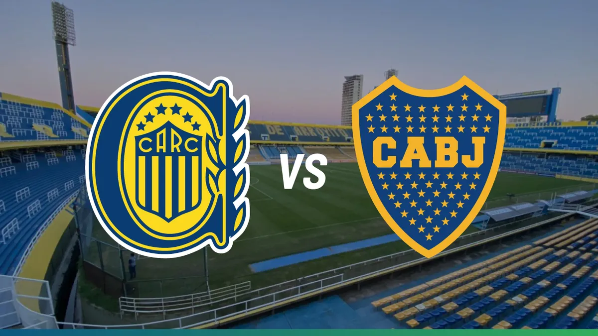

Cuándo es el próximo partido de Boca y por qué no hay fecha el próximo fin de semana
Rosario Central y Boca Juniors protagonizan este domingo, desde las 17.30, el partido estelar de la jornada 8 del Torneo Clausura 2025, correspondiente al interzonal de la fecha, porque integran distintos grupos. Con varios condimentos: primero, el despeje de la intriga de saber si estará o no Miguel Ángel Russo, ídolo canalla y actual DT del xeneize y segundo, cómo será el duelo particular que mantendrán en la cancha dos campeones del mundo con la selección argentina en Qatar 2022, Ángel Di María y Leandro Paredes. El minuto a minuto de este partido y todos los del certamen están disponibles en canchallena.com.
Ultimo partido con Central?
Se ven la cara de nuevo
Rosario Central y Boca Juniors protagonizan este domingo, desde las 17.30, el partido estelar de la jornada 8 del Torneo Clausura 2025, correspondiente al interzonal de la fecha, porque integran distintos grupos. Con varios condimentos: primero, el despeje de la intriga de saber si estará o no Miguel Ángel Russo, ídolo canalla y actual DT del xeneize y segundo, cómo será el duelo particular que mantendrán en la cancha dos campeones del mundo con la selección argentina en Qatar 2022, Ángel Di María y Leandro Paredes. El minuto a minuto de este partido y todos los del certamen están disponibles en canchallena.com.
Panorama

Cuando y donde juegan
Rosario Central vs. Boca: todo lo que hay que
saber
Fecha 8 del Torneo Clausura 2025.
Día: Domingo 14 de septiembre.
Hora: 17.30.
Estadio: Gigante de Arroyito.
Árbitro: Facundo Tello.
TV: TNT Sports.
Minuto a minuto: canchallena.com.
palmares
Boca Juniors ha ganado un total de 74 títulos oficiales en su historia, convirtiéndolo en el club más ganador de Argentina. Su palmarés incluye 34 títulos de Liga Argentina, 17 Copas Nacionales (Copa Argentina, Copa de la Liga y Supercopa), y 23 copas internacionales, destacándose las 6 Copas Libertadores, 3 Copas Intercontinentales y 2 Copas Sudamericanas.